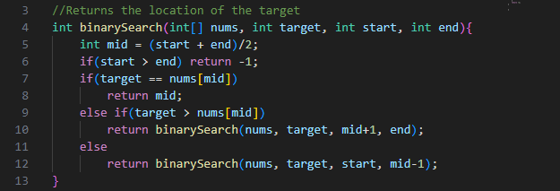
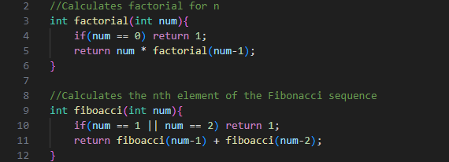

When a method calls itself, it is a recursive method. Recursion is often used to break down a complex problem into smaller and smaller parts until the simplest case is reached. We call this the "base case" of a recursive structure (a recursive structure may have multiple base cases).
The three rules of recursion are:
- The method must call itself
- The method must have a base case
- The method must approach a base case
Be careful as if the method does not have a base case or does not approach it, the method will keep on calling itself indefinitely, causing a Stack Overflow error where the program has run out of memory to store method calls.
Binary Search is a recursive searching algorithm, which splits a dataset in halves until it finds its target in the middle of the dataset. This algorithm breaks down a larger dataset into smaller and smaller pieces until it reaches its base case, where the dataset is size 1 and the target must have been found.
Here are some more examples of recursion.
